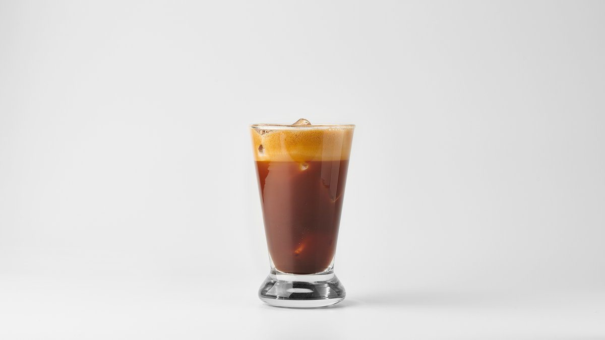
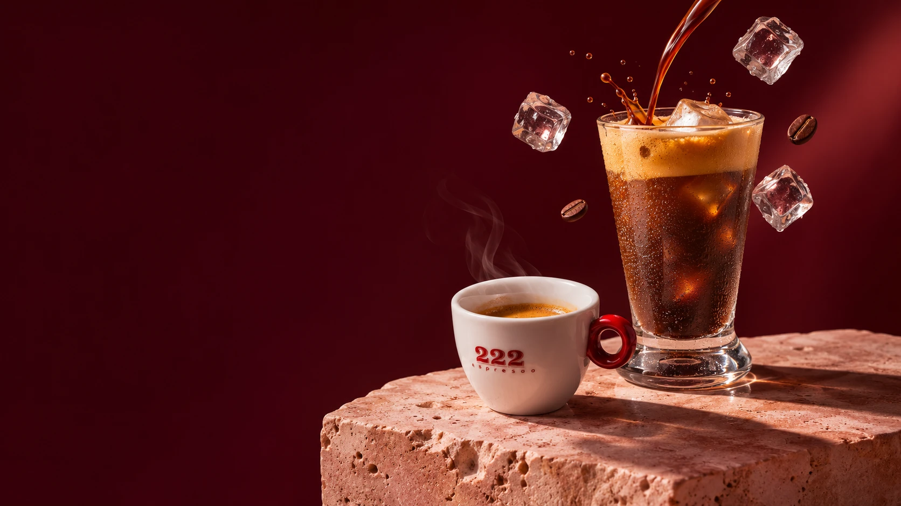
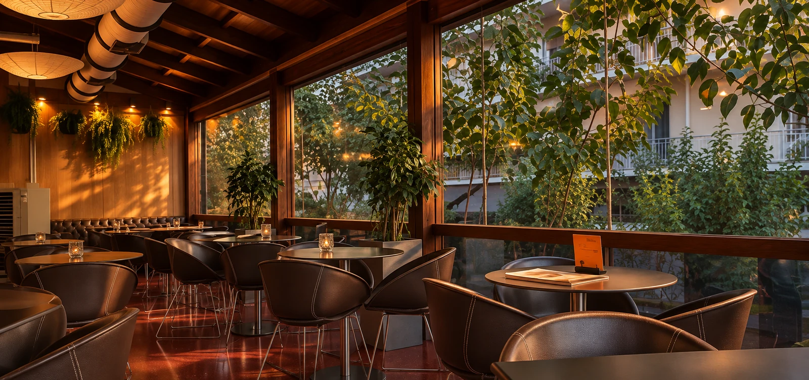
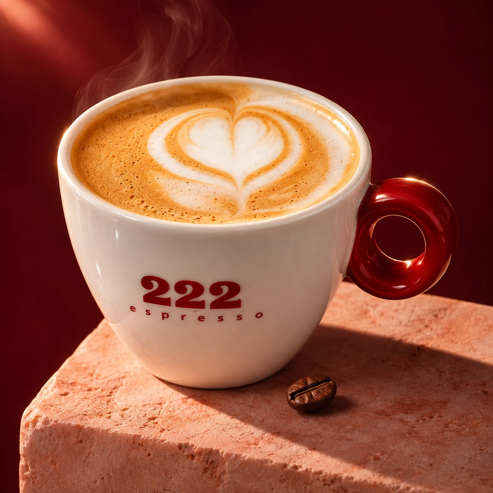
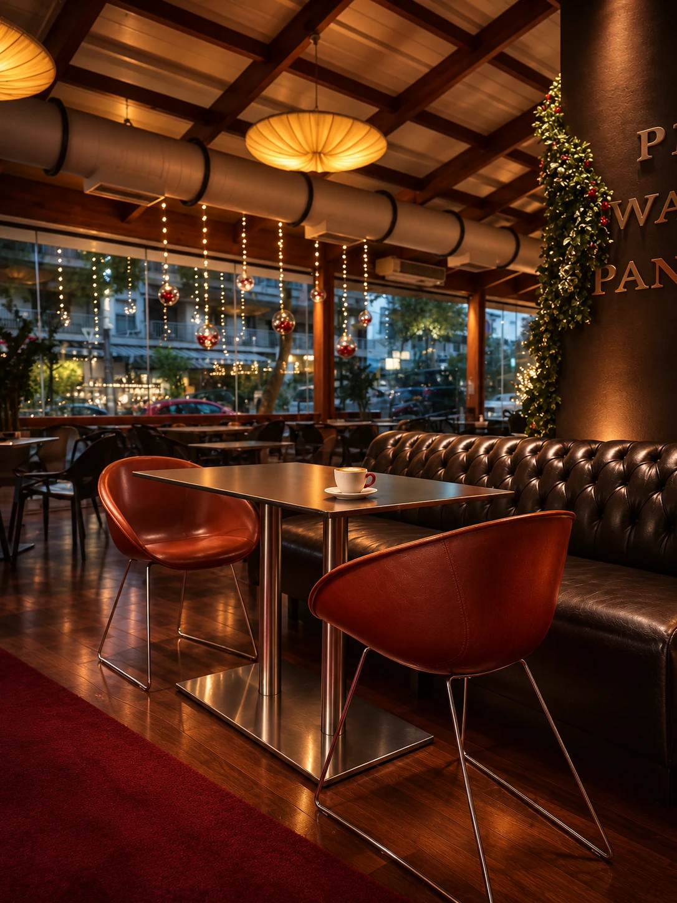
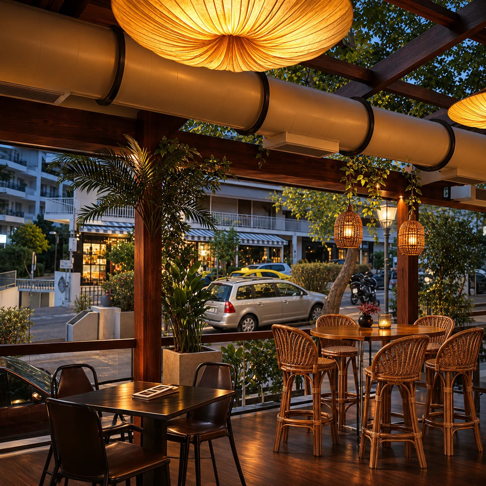
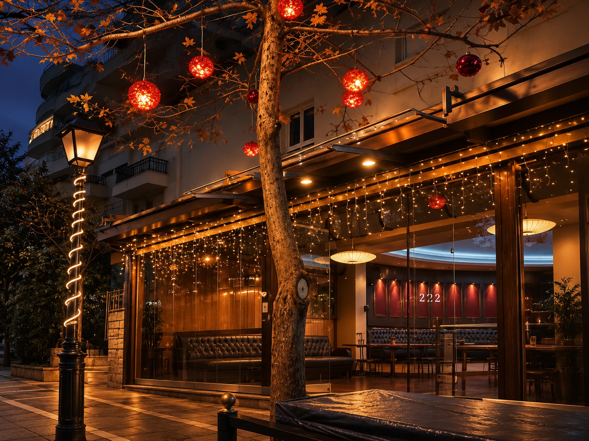
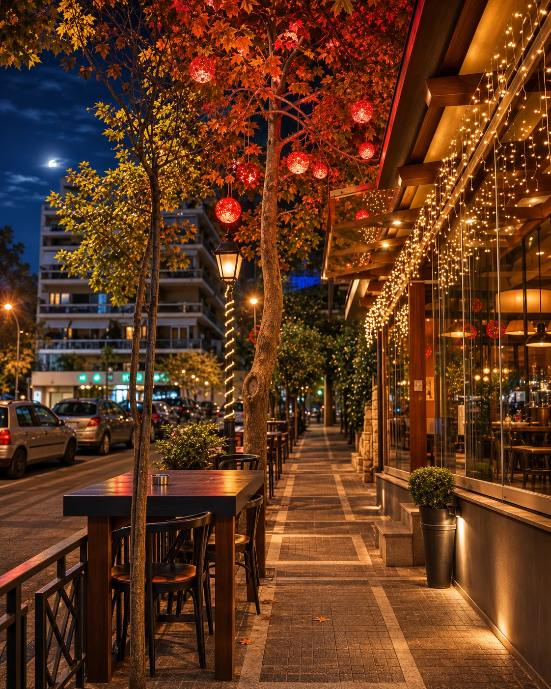
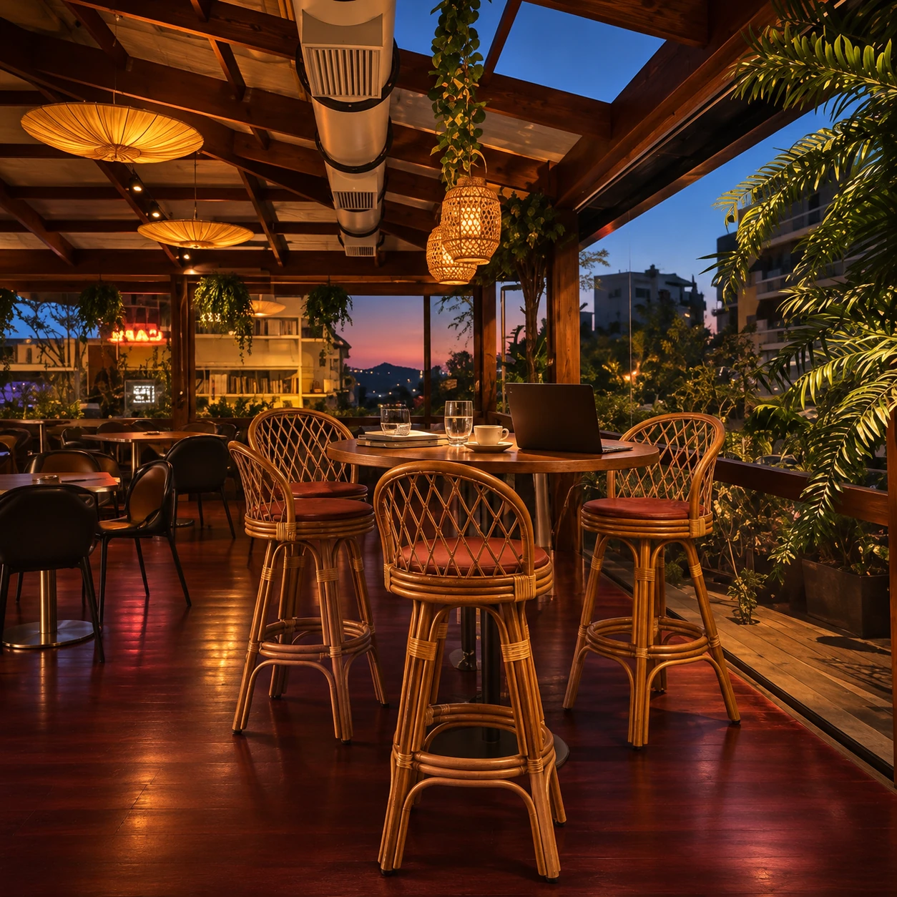

Freddo Espresso
€2.80The Greek coffee ritual. On ice, of course.

✳YOUR NEIGHBOURHOOD ESPRESSO BAR
Your first espresso. A table with friends. The everyday, made a little better. Welcome to your corner of Zografou.

01 / WHY MAKE IT 222?
The warm light, the wooden ceiling, the conversations by the window. A coffee stop feels different when you find a corner you want to come back to.
Your neighbourhood. Your kind of pause.
A cosy booth, a table by the window, or a seat overlooking Papagou. Find the spot that fits your day.
Your freddo, a panini, a little something sweet. Stay at the same table when your coffee break turns into lunch.
Right here at Papagou 140, for a quick hello or a conversation that runs a little longer. An easy place to make your own.

THE EVERYDAY, WITH A LITTLE MORE FEELING.
Strong and iced. Warm and comforting. However you take your coffee, make a moment of it.
Find your coffee222 COFFEE CAMPAIGN




03 / STAY A LITTLE LONGER
A cosy corner, just for you.
Warm lights. A seat by the window. Familiar faces and new conversations. From the first sip to the last catch-up, make yourself at home.
04 / SEE YOU AT 222
Find us on Papagou, in the heart of Zografou. Bring a friend, bring a book, or just bring yourself.
Give us a call for today’s opening hours or table enquiries.